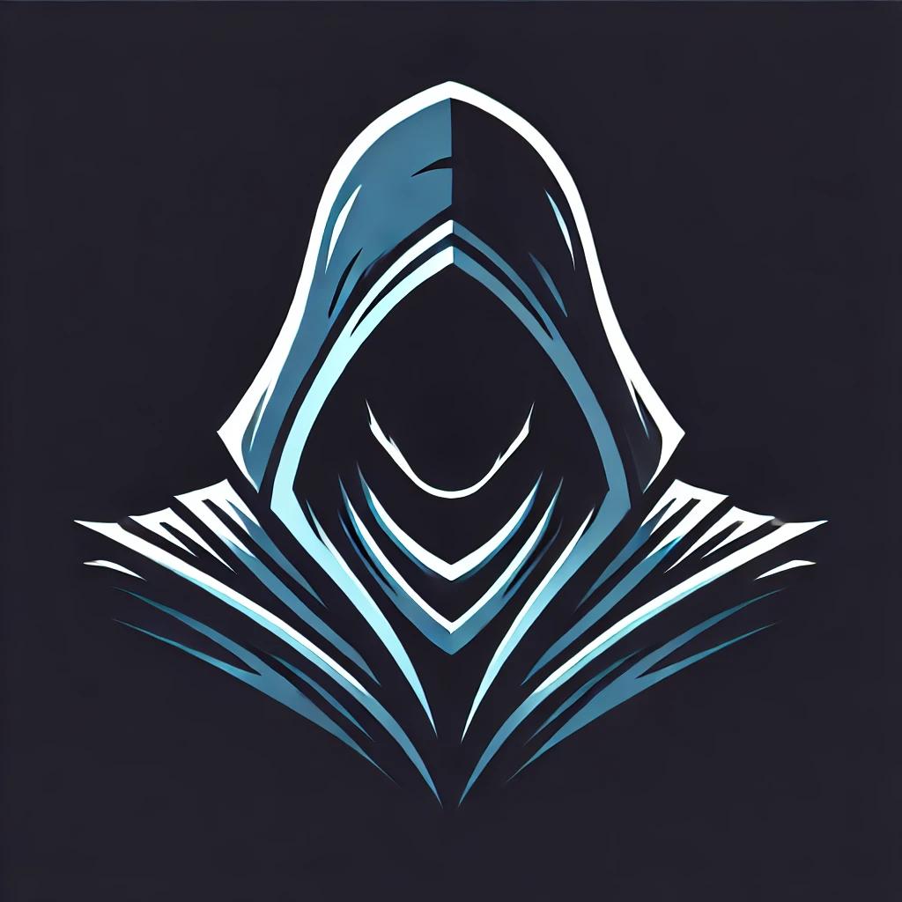
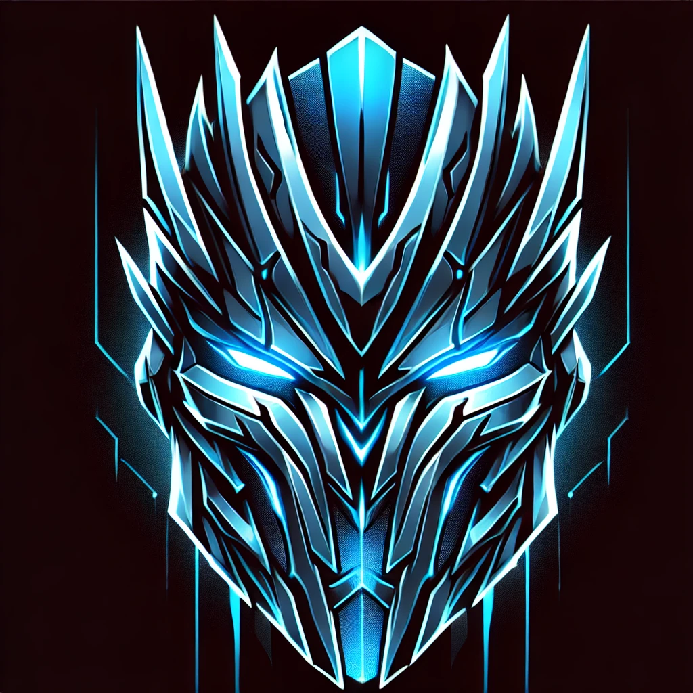
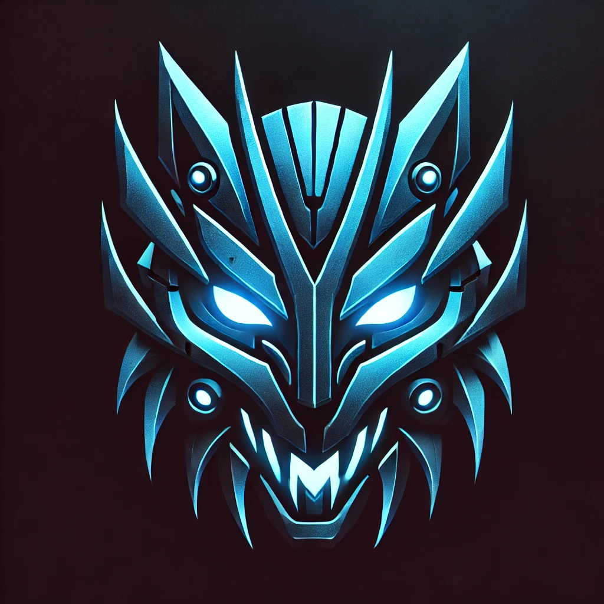

Copyright © All rights reserved | This template is made with by Colorlib
 Escolhas
Escolhas
As escolhas como dito anteriomente afetarão não só o mapa e situações futuras, como tambem afeta relações entre npc's podendo causar problemas maiores.
 Forja
Forja
Pretendo diversificar a variedade de chances e necessidade de locomoção pelo mapa, sabendo que existem 6 povos principais a chance de conseguir algo de cada uma delas tem uma porcentagem que o fara ter que se envolver com seu povo ou costumes.
 Mudanças
Mudanças
O mapa sofrera mudanças que impediram certos avanços no mapa ou poderão abrir novas ramificações.
 Recompensas
Recompensas
Teremos armas com skins personalizadas que devem ter habilidades exclusivas do personagem que o representar
 Artefatos/Armaduras
Artefatos/Armaduras
Armazenam buffs e habilidades de forma aleatoria que serão introduzidos de acordo com o grau do artesão,sendo combinados em pares terão acesso a tal beneficio.
 Armas
Armas
As armas serão dividas em variós aspectos a primeira será sua maestria de uso que habilitara maior dano e velocidade de uso pela proeficiência por meio de metas, teremos a raridade de forja ou obtenção ao achar por meio de segredos do mundo que normalmente são armas unicas.
Pensamentos

2800
POPULAÇÃO GERAL

21
BOSSES

21
MINI BOSSES

135
ESPECIES DE CRIATURAS